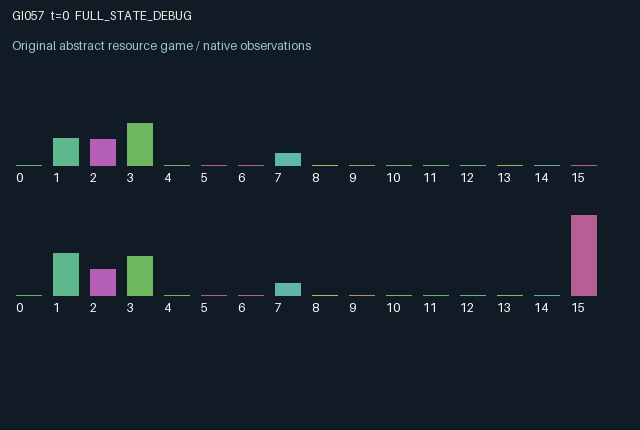

GI057 / LEGACY_ARRAY
astra-d2-00057: Latched heat exchange and delayed coolant externalities
2 agents5 actions16 observation columns32 original horizonRuntime: PASS
Release verification episode
Untrained uniform legal actions. Actual JAX state sampled along the full original episode; full-state debug camera. No human performance or learning claim.

Run this game
crucibles play --game 57
Start Python locally, then open the address printed by the terminal. Installation, multiplayer, takeover and keyboard controls →
Objective, rewards & ending
Exact task contract
{
"termination": "Original kernel t >= 32; see mechanism and source"
}Declared per-step reward bounds: -1.0 to 1.0. Observability: source_defined.
Rules
Original mechanism document (historical status wording retained)
# astra-d2-00057: Latched heat exchange and delayed coolant externalities This parentless proposal concerns two production devices connected by a jointly controlled heat exchanger and a shared heat-disposal reservoir. The familiar generic relations are shared-resource control, public externalities and bilateral permission to couple two physical states. It is an original proposal under the supplied contract, with no parent or score feedback; no claim of structural uniqueness or mechanism eligibility is made. Actions are 0 idle and possibly recover wear, 1 process available jobs, 2 cool the local device, 3 latch the local exchanger valve open, and 4 latch it closed. Valves remain in their selected positions. All actions are legal. The exchanger transfers heat only while both valves are open, including any valve changes made this step. Heat flows from the hotter device to the cooler one, so a device may decline to absorb its counterpart's heat. Processing consumes up to one queued job even if quality is low. Current temperature, a private fixed tolerance, and accumulated wear determine the useful output. Work then raises temperature, affecting later quality. Cooling removes up to 0.25 local heat but deposits a larger scaled amount into shared storage. The old storage releases heat into the shared ambient state; ambient heat then burdens both devices on subsequent steps. These separate storage, ambient and device states enforce delayed externalities. Extreme heat accumulates persistent wear; sufficiently cool idling repairs wear. Random job offers use only the supplied step key and are capped by local backlog capacity. Each agent sees its own device temperature, queue, tolerance and wear, both public valve positions, shared ambient and stored heat, its own recent exchange/output/cooling/quality, the other's last processing indicator, and its own latest job offers. It does not directly observe the other's device temperature, tolerance, wear or backlog. Opening the exchanger can reveal some temperature difference through realized heat flow. Reward is tanh of 0.9 times useful output minus cooling cost, an excess-temperature penalty and a scrap penalty. The tanh guarantees the stated [-1,1] range. Shared heat dumping, exchanger permission and production emissions allow both agents to affect persistent states and the other's future output. Private productivity, heat-transfer consent and the public consequences of cooling create potentially competing incentives; their empirical consequences remain unknown. Observation columns are: elapsed time/32; own temperature; own backlog/3; own tolerance; own wear; own valve; other valve; shared ambient; reservoir/2; own last heat exchange; own last useful output; own last dumped heat; own last quality; other's last processing indicator; own last job offers; role index. The terminal state and observation are preserved at t=32. Syntax, compilation, learning performance and pool acceptance are separate matters and are not asserted here.
Commands
0Action 0; see mechanism and source
1Action 1; see mechanism and source
2Action 2; see mechanism and source
3Action 3; see mechanism and source
4Action 4; see mechanism and source
Roles & abilities
agent_0 Original legacy agent; see mechanism and source
agent_1 Original legacy agent; see mechanism and source
Observation permissions
Training receives only the original observation rows. Role cameras use declared visibility; debug cameras are explicitly marked. Local benchmark records log debug exposure and role takeover history.
Exact observation layout
[]
Entity visibility & attributes
[]
Actual verification & provenance
Per-game execution receipt
{
"game": "gi057",
"status": "PASS",
"verification_revision": 2,
"source_sha256": "7e5067dede9bdf959b583344505aba201b7ae0e7cf8165107a1b5ed20660276e",
"seed": 20261101,
"runtime": {
"jax": "0.4.38",
"numpy": "1.26.4",
"devices": [
"TFRT_CPU_0"
]
},
"dimensions": {
"num_agents": 2,
"observation_size": 16,
"num_actions": 5,
"max_steps": 32
},
"checks": {
"eager_reset": {
"status": "PASS",
"seconds": 1.2645988464355469
},
"observation_spaces_legal_masks": {
"status": "PASS",
"seconds": 0.19068551063537598
},
"eager_step": {
"status": "PASS",
"seconds": 0.7198216915130615
},
"jit_reset": {
"status": "PASS",
"seconds": 0.2259674072265625
},
"jit_step": {
"status": "PASS",
"seconds": 0.4515407085418701
},
"eager_jit_integer_parity_float_measurement": {
"status": "PASS",
"seconds": 0.0009095668792724609
},
"jit_vmap_reset": {
"status": "PASS",
"seconds": 0.37146806716918945
},
"jit_vmap_step": {
"status": "PASS",
"seconds": 0.2750070095062256
},
"outer_autoreset_api": {
"status": "PASS",
"seconds": 0.6726851463317871
},
"full_original_horizon_episode_and_render": {
"status": "PASS",
"seconds": 2.196439504623413
}
},
"human_scores": null,
"browser_controls": "PENDING",
"failures": [],
"elapsed_seconds": 6.949397563934326,
"float_parity_max_abs": 2.9802322387695312e-08,
"numerical_parity": "UNDETERMINED_NONZERO_FLOAT_DIFFERENCE",
"raw_terminal_absorbing": "NOT_PART_OF_ORIGINAL_LEGACY_CONTRACT",
"terminal_outer_reset": "PASS",
"episode_steps": 32,
"scripted_random_returns": [
1.4297564327716827,
2.2362621650099754
],
"terminal": true,
"demo_information": "FULL_STATE_DEBUG",
"demo_frames": 33,
"render_roles_checked": 2
}Chromium control verification
{
"game": "gi057",
"status": "PASS",
"human_scores": null,
"engineering": true,
"checks": [
"catalog_selected_and_real_native_reset",
"dom_queue_and_native_step",
"second_participant_ownership_and_native_joint_step",
"all_roles_individually_controllable_no_role_cap",
"explicit_debug_camera",
"release_to_pure_ai_without_reset"
],
"seconds": 2.706827163696289
}Original identity and file hashes
{
"id": 57,
"key": "gi057",
"title": "astra-d2-00057: Latched heat exchange and delayed coolant externalities",
"summary": "",
"tags": [],
"family": "legacy_array",
"dimensions": {
"num_agents": 2,
"observation_size": 16,
"num_actions": 5,
"max_steps": 32
},
"source_sha256": "7e5067dede9bdf959b583344505aba201b7ae0e7cf8165107a1b5ed20660276e",
"manifest_sha256": "f05d80f6b066513cfbe213a7c59c537dc74322b7b3257b13a570b19b84da5638",
"files": [
{
"file": "candidate.py",
"sha256": "7e5067dede9bdf959b583344505aba201b7ae0e7cf8165107a1b5ed20660276e",
"bytes": 4688,
"origin": "work/exp_2/astra_generation/discovery_v2/initial/candidate_00057/attempt_00/candidate.py"
},
{
"file": "mechanism.md",
"sha256": "5899e8bdf36ebc84ff3f82adbb5d997e50b08cfacd60848b6e5de9ee24452982",
"bytes": 3024,
"origin": "work/exp_2/astra_generation/discovery_v2/initial/candidate_00057/attempt_00/mechanism.md"
}
],
"original_status": "LEGACY_SOURCE",
"original_saved_replay": false,
"release_validation": "PASS",
"human_scores": null,
"browser_validation": "PASS"
}